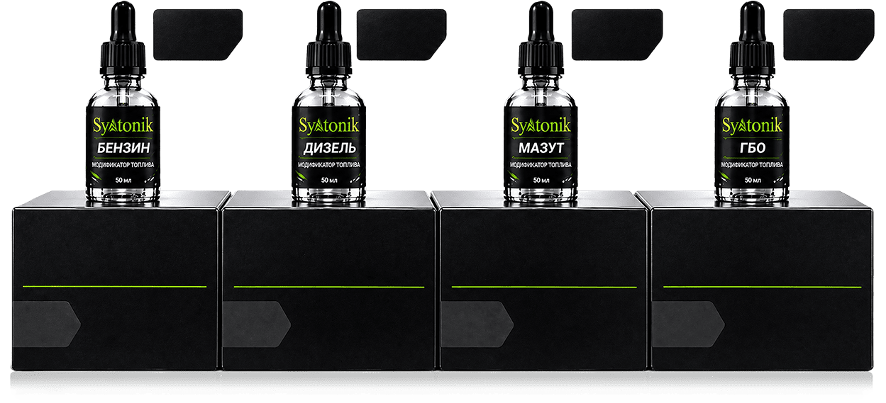

Что такое Syntonik: состав, принцип работы и виды
Syntonik — концентрированная добавка-модификатор топлива для бензина, дизеля, мазута и ГБО. Как работает состав, что вхо
Читать →Блог Syntonik · Тольятти
Инструкции, дозировка, методика замеров и цены. Материалы общие для всех городов, доставка — ТК по Поволжью 1–2 дня, самовывоз из Самары. Полный раздел: блог Syntonik.
Syntonik — концентрированная добавка-модификатор топлива для бензина, дизеля, мазута и ГБО. Как работает состав, что вхо
Читать →Как Syntonik снижает расход топлива: очистка отложений, полнота сгорания, дожиг. Механизм действия добавки и что говорят
Читать →
Дозировка Syntonik: 1 мл на 10 литров топлива. Таблица на 50 и 100 литров, расчёт для бензина, дизеля, мазута и ГБО, ско
Читать →
Как применять Syntonik: пошаговая инструкция — когда заливать, в какой порядок заправляться, сколько ездить до первого з
Читать →Когда виден эффект от Syntonik: на первом баке для бензина, после 300 км для дизеля. От чего зависит скорость результата
Читать →Как проверить расход топлива с Syntonik: методика замера по одометру и АЗС, как убрать погрешность бортового компьютера,
Читать →Состав Syntonik и принцип работы: активные компоненты модификатора, распыление через форсунки, дожиг топлива. Что извест
Читать →Лаковые отложения в топливной системе: почему образуются, как влияют на расход и динамику, признаки загрязнения и методы
Читать →Признаки засорённой топливной системы: выросший расход, троение, чек, вибрация, вялый разгон. Как отличить от поломок и
Читать →Холодный запуск зимой: почему трудно стартеру, как облегчить запуск, роль чистой топливной системы и добавки Syntonik, с
Читать →
Syntonik для бензиновых двигателей: работа с инжектором, GDI и TSI, дозировка 1 мл на 10 л, эффект по отзывам владельцев
Читать →Syntonik для дизельных двигателей: работа с ТНВД и Common Rail, дозировка, почему эффект проявляется после 300 км, замер
Читать →Помощь и вопросы
Нейросеть-бот в Telegram отвечает по данным сайта, продавец — по почте. Страницу можно сохранить в Markdown кнопкой выше и задать вопрос в любом чат-боте.
Канал: @ecosyntonik · +7 919 715-79-79 · x.element@bk.ru
Мы используем cookie и локальное хранилище, чтобы сайт работал корректно и мы понимали, какие материалы полезны. Подробности — в политике обработки данных.